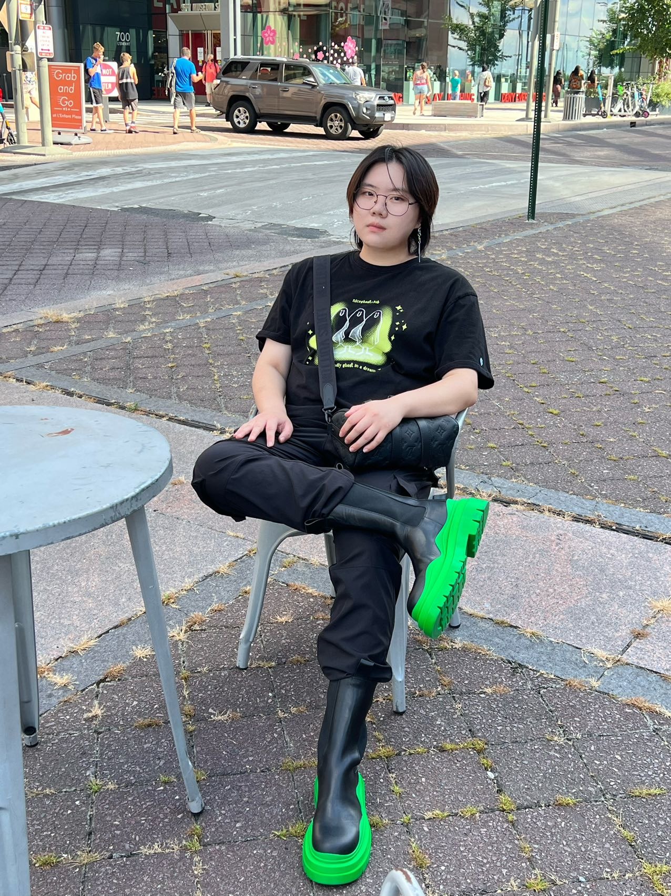

|  |
About meHi, my name is Qian Chen. My undergraduate school was the University of Minnesota, Twin Cities. That's a very cold place. And my undergraduate major is statistics. I hope I can learn more about how to use python for analysis, and machine learning, deep learning. My ideal job would probably be DS or SDE. I'm still exploring, so not really sure. I really like playing Badminton and finding good restaurants. |
Academic Interests- IMPORTANT NOTE: - THIS IS JUST AN EXAMPLE WEBSITE INCLUDED TO GET YOU STARTED - YOU SHOULD CUSTOMIZE IT TO MAKE IT YOUR OWN - PLEASE REMOVE/REPLACE THE "external links" and "local reference" TABS, THEY WERE JUST INCLUDED AS EXAMPLES" |
Education2018-2022: University of Minnesota, Twin Cities 2022-2024: Georgetown University |